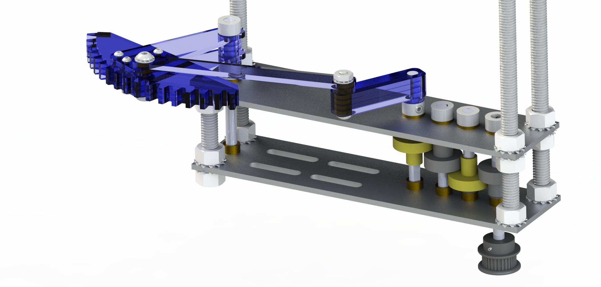

This was the first team project for the Olin course Introduction to Mechanical Prototyping. In this sculpture, we attempted to capture the schooling motion that many species of small fish use to confuse predators. When fish move in this way, they become one larger, faster-moving, and less predictable thing. We decided to attempt a similar effect by using the rotational motion of thin sheet metal fish to give the illusion of translational motion.
Although I was involved in almost every aspect of this project, my most quantifiable contribution was the design and manufacturing of the gearboxes and four-bar linkage.
My final report on the project can be found here.
